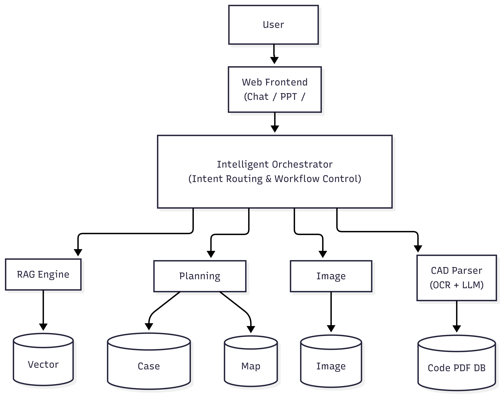
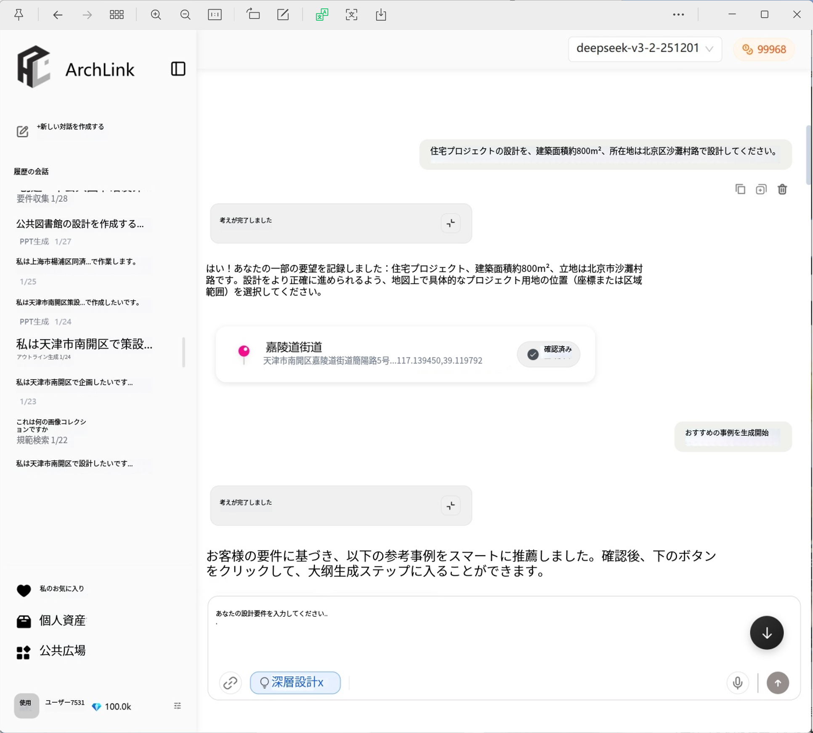
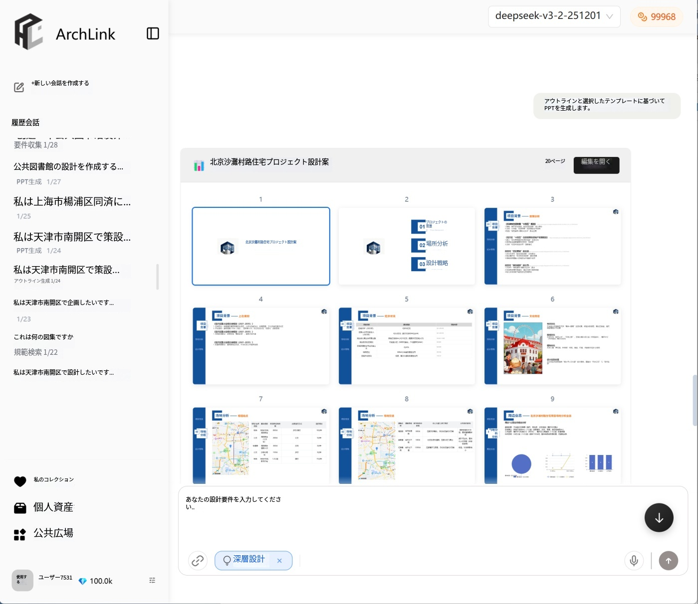
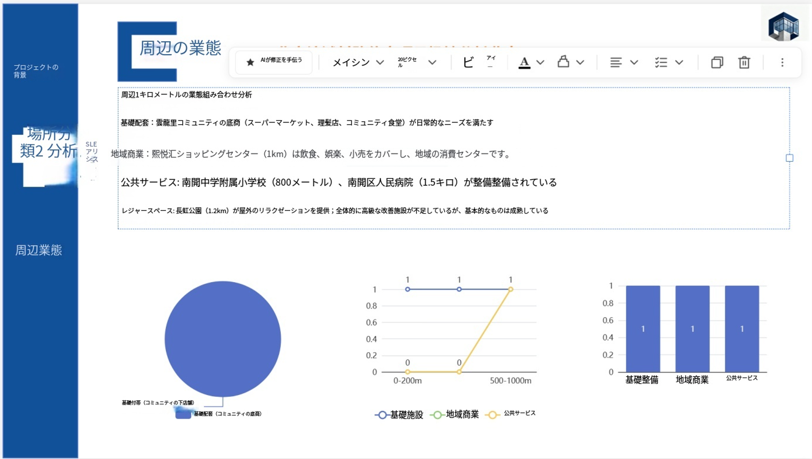
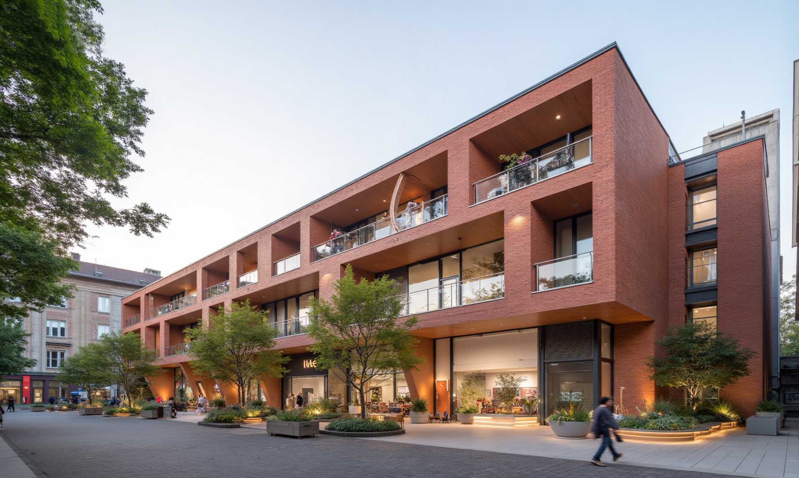
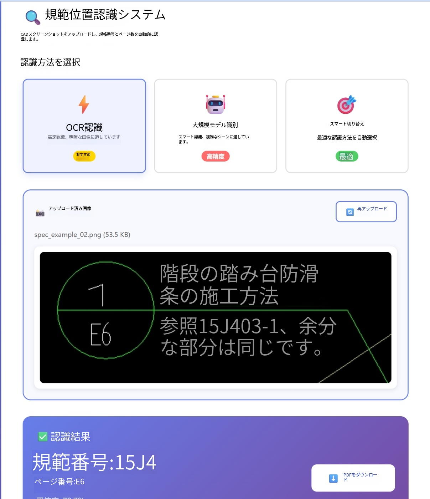

Architecture Design Planning AI Assistant System
Architecture Design Planning AI AssistantAuthor: Hanyang Yin
Role: Product Design / System Architecture / Core Developer
Keywords: LLM · RAG · OCR · PPT Generation · AWS · Docker · AI Agent
Project Overview
This project is an intelligent assistance system designed for the early-stage architectural planning process. By integrating large language models, multi-source knowledge retrieval, automated content generation, and image generation technologies, the system provides end-to-end support from requirement analysis and concept development to final deliverable production.
The system primarily targets architects, architecture students, and planning professionals, aiming to lower the entry barrier for planning tasks while improving efficiency and professional quality.
Core Goal: Enable non-expert users to construct professional-level architectural planning proposals.
System Architecture

The system adopts a layered architecture consisting of frontend interaction, middleware orchestration, intelligent engines, and multi-source databases.
Main components include:
- Web Frontend (User Interface)
- API Gateway (Service Orchestration)
- LLM Service (Large Language Model Service)
- RAG Engine (Knowledge Augmentation Module)
- OCR Service (Image Analysis Module)
- Storage Layer (Multi-type Databases)
🔹 Module 1: Multi-Knowledge-Base Intelligent QA System (RAG-based Chat System)
Description
This module integrates the Gemini large language model with RAG technology to provide high-precision question-answering services specialized for the architectural domain.
Connected knowledge bases include:
- Architectural Case Database (Large-scale public building cases)
- Building Codes and Regulations Database
- Architectural Knowledge Base (Team-curated materials)
System Flow
User Query
↓
Intent Recognition
↓
Knowledge Retrieval
↓
RAG Fusion
↓
LLM Generation
↓
Final Answer
Interface Example

Technical Highlights
- Dynamic routing across multiple knowledge bases
- Semantic intent classification
- Vector-based retrieval and document re-ranking
- Hallucination mitigation mechanisms
📄 Detailed RAG Module Documentation
🔹 Module 2: Architectural Planning Proposal Generator (PPT Generator)
Description
This module assists users in building complete architectural planning proposals from scratch and outputs editable PPT documents.
Core Concept: Interactive Guidance + Case-Based Reference + Intelligent Generation
Workflow
- Requirement collection (dialog-based guidance)
- Site analysis (Map API integration)
- Case matching
- Preference selection
- Outline generation
- Manual editing
- Automatic PPT generation
Process Diagram

Editing Interface

Prompt Design Strategy
- Hierarchical prompt structure
- Page-level prompting
- Role-based prompting
- Constraint-based output templates
📄 Detailed PPT Module Documentation
🔹 Module 3: Architectural Visualization Generation System (Image Generation)
Description
This module integrates multiple image generation APIs to produce architectural visualizations based on user input.
Currently supported:
- NanoBana API
- [Other Image Generation APIs]
Future directions:
- Domain-specific model fine-tuning
- Multi-view image generation
- Structural consistency constraints
Example Outputs

Key Module: CAD-Based Building Code Intelligent Parsing System (Independent Development)
Background
Traditional building code retrieval relies on manual page searching, resulting in low efficiency and high error rates.
This module enables:
CAD Screenshot → Automatic Code Page Localization → Instant PDF Retrieval
System Flow
PDF Preprocess → OCR Indexing → Page Database
↑
CAD Screenshot → OCR + LLM → Code Extraction
↓
Page Matching
↓
PDF Return
Interface Example

Core Technologies
- Batch OCR-based PDF segmentation
- Multi-strategy text recognition fusion
- Code numbering rule modeling
- High-robustness indexing structure
- API-oriented service design
Engineering Implementation
- Docker-based containerization
- Deployment on AWS EC2
- RESTful API design
- Automated logging and monitoring
Role and Contributions
In this project, I primarily focused on product planning and system architecture design, while also developing several core technical modules.
Main Responsibilities
- Overall system architecture design
- UX and workflow planning
- RAG-based QA framework construction
- PPT generation pipeline design
- Prompt engineering framework development
- Independent development of CAD parsing module
- Cloud deployment and API design
Key Contributions
- Transformed complex architectural workflows into automated systems
- Enabled production-level deployment of AI services
- Built scalable and extensible technical infrastructure
Technology Stack
| Category | Technology |
|---|---|
| LLM | Gemini |
| RAG | FAISS / Chroma |
| OCR | PaddleOCR / Custom |
| Backend | FastAPI |
| Frontend | React / Vue |
| Cloud | AWS EC2 |
| Deploy | Docker |
| DB | PostgreSQL / S3 / VectorDB |
Technical Challenges and Solutions
1. Unstable RAG Accuracy
Issue: High retrieval noise
Solution: Multi-stage filtering and re-ranking
2. OCR Recognition Errors
Issue: Complex CAD text structures
Solution: OCR + LLM-based correction fusion
3. Incomplete User Requirements
Issue: Missing critical information
Solution: Multi-turn guided dialogue design
Future Work
- Development of architecture-specific generative models
- Multimodal collaborative design
- BIM system integration
- Enterprise-level deployment optimization
```